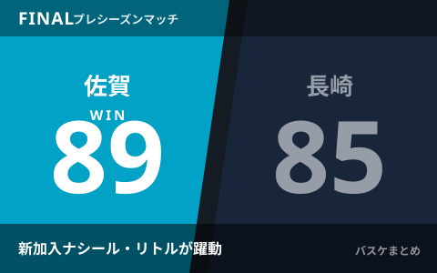

佐賀バルーナーズ、プレシーズンで前季B1王者・長崎ヴェルカに89-85で競り勝つ 新加入ナシール・リトルが躍動

佐賀バルーナーズは8月29日、佐賀県武雄市の「ケーブルワン・スポーツパーク」で行われたプレシーズンマッチで、前季（2025-26シーズン）のB1王者・長崎ヴェルカと対戦し、89-85で勝利しました。今季新加入の元NBA選手ナシール・リトルや富山仁貴の3ポイント、琉球ゴールデンキングスから加入したデイミアン・ドットソンの得点が光り、9月22日開幕の新リーグ「B.PREMIER」を前に手応えを示す一戦となりました。
試合経過 序盤の劣勢を新加入陣の得点で逆転
佐賀は第1クォーター開始直後に5点のリードを許す苦しい入りとなりましたが、新加入のナシール・リトルや富山仁貴が立て続けに3ポイントシュートを沈めてリズムをつかむと、一時7点のリードを奪う場面もありました。第2クォーターは、オフシーズンに琉球ゴールデンキングスから加入したデイミアン・ドットソンが得点を重ね、前半を42-37の佐賀リードで折り返しています。後半も一進一退の展開となりましたが、佐賀が終盤の攻防を制し、最終スコア89-85で前季王者からの勝利をつかみました。
| クォーター | 佐賀 | 長崎 |
|---|---|---|
| 前半終了時 | 42 | 37 |
| 最終 | 89 | 85 |
新加入のナシール・リトルが早速フィット
今季から加入したナシール・リトルは、2019年NBAドラフト1巡目25位でポートランド・トレイルブレイザーズに指名され、フェニックス・サンズやマイアミ・ヒートを経て2025-26シーズンは千葉ジェッツでプレー。B.LEAGUEデビューとなった昨季は53試合に出場し、平均16.5得点・7.7リバウンドを記録した実力者です。今回のプレシーズンマッチでも第1クォーターから積極的に3ポイントを狙うなど、新天地でのフィットぶりをうかがわせました。
宮永雄太HC「胸を借り、現在地を確かめる試合になった」
試合後、佐賀の宮永雄太ヘッドコーチは「胸を借り、現在地を確かめる試合になった」と手応えを口にしました。前季B1王者を相手に接戦を制したことで、B.PREMIER初年度に向けたチーム作りに一定の自信を得た様子です。長崎にとっても、新リーグ開幕前の重要な調整試合の一つとなりました。
B.PREMIER開幕まで1カ月弱、各クラブがプレシーズンで調整大詰め
新リーグ「B.PREMIER（B.LEAGUE 2026-27）」は9月22日に開幕予定で、現在は各クラブがプレシーズンマッチを通じて戦力の最終確認を進めている時期にあたります。今オフの補強状況は8月の移籍まとめでも紹介した通り、外国籍選手を中心とした入れ替えが各クラブで進んでおり、今回の佐賀のように新加入選手が早い段階でチームにフィットできるかが、開幕からの好スタートを左右しそうです。新リーグの詳しい開幕日程はBプレミア開幕の記事でまとめています。
Q. プレシーズンマッチの結果は成績に影響する？
A. プレシーズンマッチはあくまで公式戦前の調整試合で、B.PREMIERのレギュラーシーズン成績には反映されません。各クラブのコンディション確認や新加入選手のフィット確認が主な目的です。
出典：佐賀新聞「＜佐賀バルーナーズ＞昨季B1王者に競り勝つ バスケ・プレシーズンマッチ、長崎に89-85」／同「＜佐賀バルーナーズ＞元NBAリトルら躍進の予感 プレシーズンマッチ・長崎を89-85 Bプレミアへ手応え」ほか
https://www.saga-s.co.jp/articles/-/1781308
https://www.saga-s.co.jp/articles/-/1781310